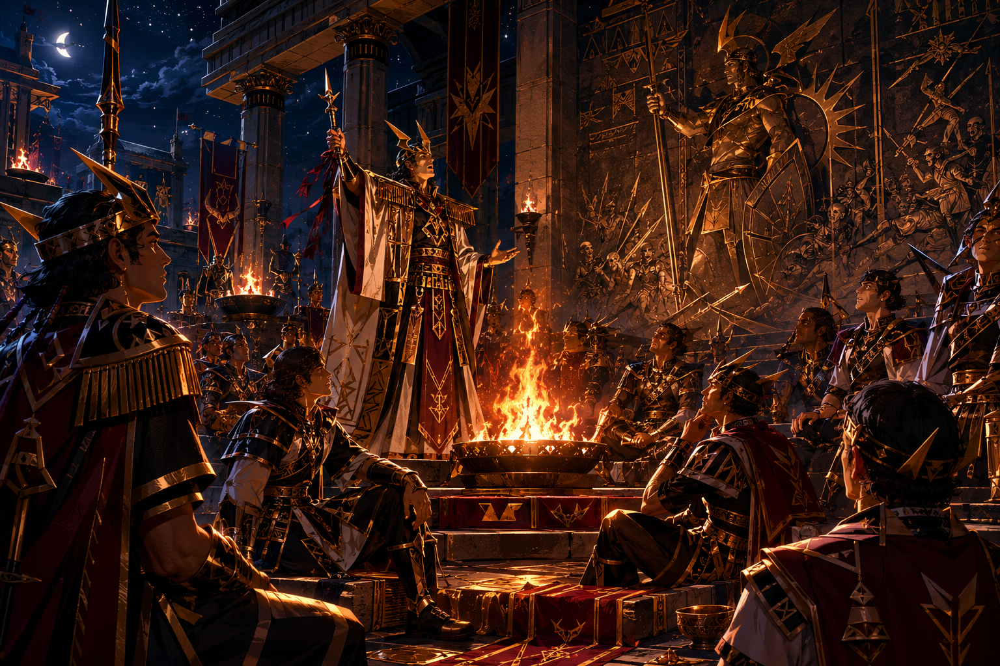

Dictionary / 第二部 — 民族・文化
コルダ人
（こるだじん） 固有名詞・民族

コルダ人の都市 — レクタ・ドラフ（奪還の角笛）競技場

コルダ人の信仰 — 炎の神殿での誓いの儀式

コルダ人の衣装設定 — 騎士カイエルとヴァレリア
南西洋大陸の牧畜民族。都市国家の連合体を形成し、「負けても屈服しない」誇りの文化を持つ。この誇りが外交的コストとなるプライドの外交的コストが失政パターン。家畜の正確な数を言わない作法（ぼかした表現で誇りを保つ）を持つ。世界をレクタ・ノス（取り返すべき場所）と呼ぶ。後の疫学的検証により、「200年の対等貿易」とされた時代は、実際にはノルド熱による沿岸人口の3〜5割減少と同時進行していたことが判明している。
「勝つことより屈服しないことが最高の価値とされる」（zV8mQpRt）
関連項目